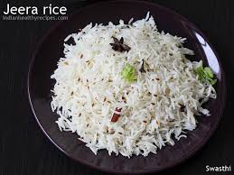

Jeera Rice

Description
Jeera rice is a fragrant and flavourful dish mage by cooking basmati rice with cumin seeds, ghee and mild spices.
It is a popular accompaniment or curries and dals in Indian cuisine, offering a simple yet aromatic addition to any meal.
Ingredients
Serves 2
- Basmati Rice - 1 cup
- Cumin seede (Jeera) - 1-1.5 teaspoon
- Ghee or oil - 1 to 2 tablebspoon
- Water - 2 cups
- Salt - To taste
- Other whole spices - Optional
Steps
- Rinse the rice: Wash the basmati rice thouroghly until the water runs clear then soak it for 15-20 minutes. Drain the rice before cooking.
- Heat the oil or ghee: In a pot or pan, heat cumin seeds and let them splutter for a few seconds.
- Add optional whole spices:(optional) Add and saute fro a few seconds to release their aroma.
- Cook rice: Add the drained rice to the pan and gently saute for 2-3 minutesensuring rice is coated with the ghee and spices.
- Add water and cook: Add 2 cups of water and salt to taste. Bring to a boil amd then lower the heat, cover and simmer for 10-12 minutes or until the rice is cooked amd the water is absorbed